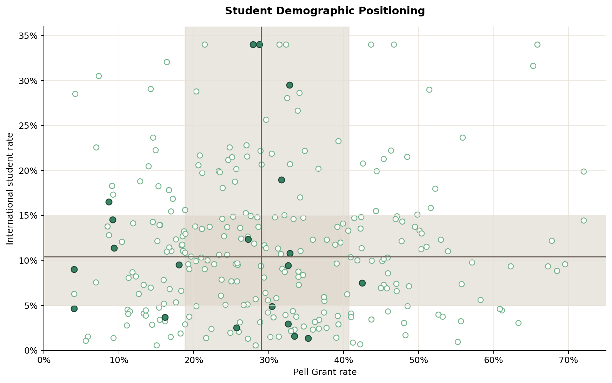

Project Shape
During summer 2025, I worked as a Data Science Intern at Jamix. My main task was to statistically identify which current Jamix clients were most similar to potential new clients, giving the company a more evidence-based way to prioritize outreach and focus on the strongest-fit opportunities.
I built a data preparation and visualization workflow that transformed messy institutional records into decision-ready market segments. The public version keeps the same analytical structure while replacing all company-sensitive names, counts, and recommendations with generated sample data.
Data Pipeline
The original workflow combined three source categories: public institutional data from the College Scorecard API, foodservice context provided through NACUFS, and operational records exported from the company HubSpot. I cleaned and joined the sources in Python, standardized school names and comparable fields, validated missing or inconsistent records, and prepared analysis-ready tables for Tableau.
Dashboard Preview
The visuals demonstrate the same portfolio skills as the original Tableau work: distribution analysis, demographic positioning, financial-capacity curves, 3D clustering, and network-based prioritization.





Methods
College Scorecard API integration, NACUFS data preparation, HubSpot export cleaning, Python joins, feature standardization, enrollment binning, distribution analysis, K-means clustering, Euclidean similarity scoring, Tableau dashboarding, and network visualization. The original business context has been generalized so the work can be discussed publicly without revealing proprietary strategy.